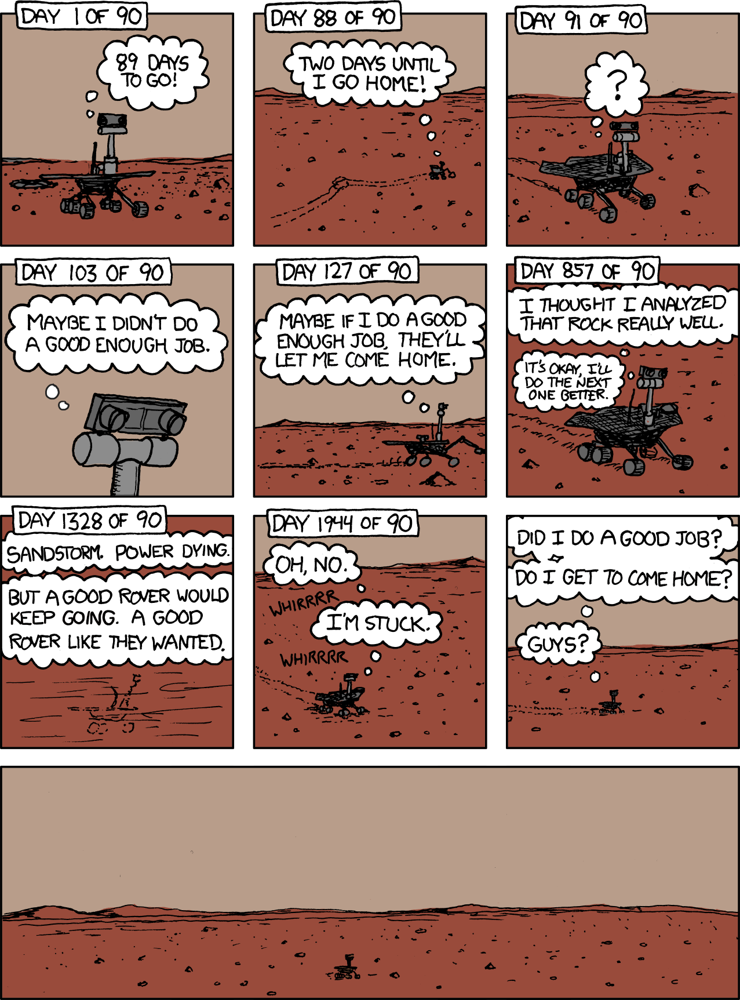

To start with let’s have an environment to work with. Fig. 1.3 depicts a standard indoor environment
an AMRAutonomous Mobile RoboticsAutonomous Mobile Robotics is set to navigate. Now, suppose an
AMRAutonomous Mobile RoboticsAutonomous Mobile Robotics in question must deliver messages
between two (
In creating a
navigation system for this task, it is clear the AMRAutonomous Mobile RoboticsAutonomous Mobile
Robotics will need sensors and a motion control system. Sensors are required to avoid hitting moving
obstacles such as humans, and some motion control system is required so that the robot can actively
move.
It is not obvious, whether or NOT this AMRAutonomous Mobile RoboticsAutonomous
Mobile Robotics will require a
However, explicit localisation with reference to a map is NOT the only strategy that qualifies as a goal detector.
An alternative, adopted by the behaviour-based community, suggests that, given sensors and effectors
are noisy and information-limited, one should
In essence, this approach
This technique is based on a idea, there exists a procedural solution to the particular navigation problem at hand.
The architecture of this solution to a specific navigation problem is shown in Fig. ??. The primary advantage of this method is that, when possible, it may be implemented very quickly for a single environment with a small number of goal positions. It suffers from significant disadvantages, which are broadly:
-
The method does not directly scale to other environments or to larger environments. Often, the navigation code is location-specific, and the same degree of coding and debugging is required to move the robot to a new environment.
-
The underlying procedures, such as
left-wall-follow, must be carefully designed to produce the desired behaviour. This task may be time-consuming and is heavily dependent on the specific robot hardware and environmental characteristics. -
A behaviour-based system may have multiple active behaviors at any one time. Even when individual behaviours are tuned to optimise performance, this fusion and rapid switching between multiple behaviors can negate that fine-tuning. Often, the addition of each new incremental behavior forces the robot designer to re-tune all of the existing behaviors again to ensure that the new interactions with the freshly introduced behavior are all stable
In contrast to the behaviour-based approach, the map-based approach includes
In map-based navigation, the robot

-
The explicit, map-based concept of position makes the system’s belief about position transparently available to the human operators.
-
The existence of the map itself represents a medium for communication between human and robot as the human can simply give the robot a new map if the robot goes to a new environment.
-
The map, if created by the robot, can be used by humans as well, achieving two uses.
The map-based approach will require more up-front development effort to create a navigating AMRAutonomous Mobile RoboticsAutonomous Mobile Robotics. The hope is that the development effort results in an architecture which can successfully map and navigate a variety of environments, thereby compensating for the up-front design cost over time. Of course the primary risk of the map-based approach is that an internal representation, rather than the real world itself, is being constructed and trusted by the robot. If that model diverges from reality, (...) As in if the robot gets the wrong idea about its environment and draws the wrong map. then the robot’s behaviour may be undesirable at best or wrong at worst, even if the raw sensor values of the robot are only transiently incorrect.
In the remainder of this chapter, we focus on a discussion of map-based approaches and, specifically, the localisation component of these techniques. These approaches are particularly appropriate for study given their significant recent successes in enabling AMRAutonomous Mobile RoboticsAutonomous Mobile Robotics to navigate a variety of environments, from academic research buildings to factory floors and museums around the world.